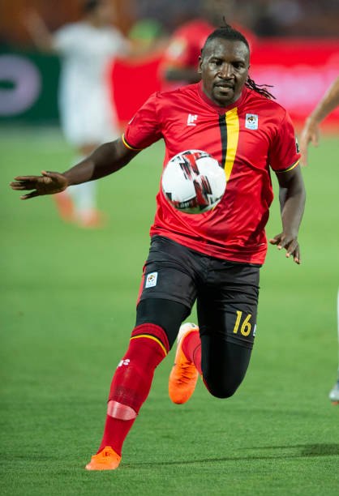

Uganda has always been hosting the olympics football league since 1977 and the idea was brought up by the football federation of uganda headed by engineer moses magogo. today, the olympics footall league will be held at st. mary's stadium, kitende.
